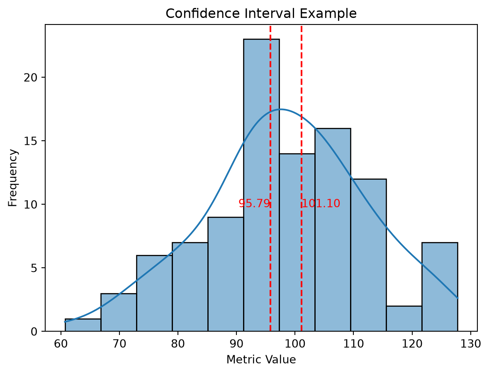
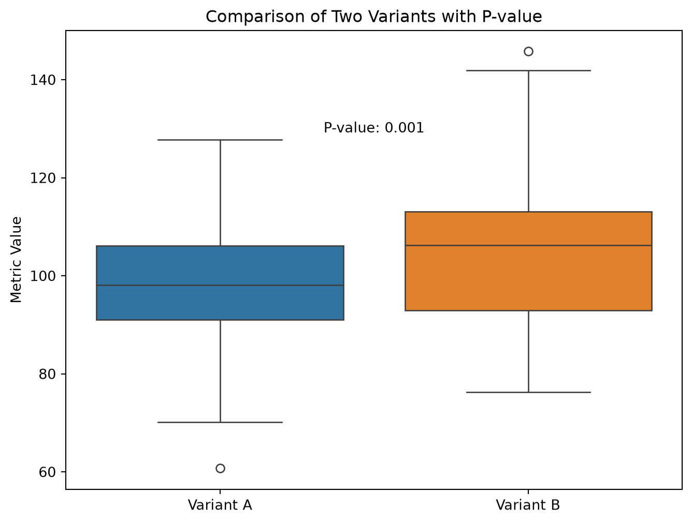

A/B testing, also known as split testing, is a powerful technique employed by data engineers and marketers to evaluate the performance of two or more variants of a webpage, app feature, or email campaign. This method allows businesses to optimize their products and services based on data-driven insights and user behavior analysis. In this post, we’ll dive deep into the intricacies of A/B testing, exploring the core concepts, statistical aspects, and real-world business use cases that demonstrate why it is an essential tool in today’s competitive market.
Section 1: Understanding A/B Testing
A/B testing is a controlled experiment where two or more variants of a product or service are compared to identify which one performs better. The objective of this technique is to improve the user experience, increase conversions, and drive business growth by refining existing elements or introducing new ones. This can be applied in various industries, including e-commerce, marketing, software development, and more.
A/B testing typically follows these steps:
Identify a metric: Determine the goal of your test, such as increasing clicks, engagement, or revenue.
Create variants: Develop two or more versions of the product or service element to be tested.
Define the audience: Decide which users will participate in the experiment and how many samples are needed for accurate results.
Run the test: Implement the variants in a live environment, ensuring that all participants have equal access to the options being compared.
Analyze the data: Compare the performance of the variants using statistical analysis tools to determine which one performs better based on the defined metric.
Optimize and repeat: Based on the results, make improvements or create new variants for further testing.
Section 2: Key Statistical Concepts in A/B Testing
Hypothesis: The specific idea or assumption that you want to test, such as “changing the color of a call-to-action button will increase click-through rates.”
Significance level: The probability that the observed difference between variants is due to random chance rather than a genuine effect. A common significance level used in A/B testing is 0.05, meaning there’s a 5% chance of observing the result by chance alone.
Confidence interval: A range within which the true value of the metric lies with a specified level of confidence. For instance, a 95% confidence interval would mean that we are 95% certain the true value falls within the given range.
import matplotlib.pyplot as pltimport seaborn as snsimport numpy as npimport pandas as pd# Illustrating Confidence Intervalsnp.random.seed(42)data = np.random.normal(loc=100, scale=15, size=100)ci = sns.histplot(data, kde=True)ci.set(title='Confidence Interval Example', xlabel='Metric Value', ylabel='Frequency')# Calculate and display the 95% confidence intervalmean = np.mean(data)std = np.std(data)lower_ci = mean -1.96* std / np.sqrt(len(data))upper_ci = mean +1.96* std / np.sqrt(len(data))plt.axvline(lower_ci, color='red', linestyle='--')plt.axvline(upper_ci, color='red', linestyle='--')plt.text(lower_ci, 10, f'{lower_ci:.2f}', color='red', ha='right', va='center')plt.text(upper_ci, 10, f'{upper_ci:.2f}', color='red', ha='left', va='center')plt.show()

Statistical power: The ability to detect a difference between variants when it genuinely exists. A high statistical power means you have a greater chance of finding an effect if one is present, ensuring more accurate results.
P-value: The probability that the observed results could be due to random chance. If the p-value is below the chosen significance level (e.g., 0.05), then there’s statistically significant evidence supporting your hypothesis.
# Illustrating P-valuesfrom scipy.stats import ttest_ind# Generate sample data for two variantsnp.random.seed(42)variant_a = np.random.normal(loc=100, scale=15, size=100)variant_b = np.random.normal(loc=105, scale=15, size=100)# Perform t-testt_stat, p_value = ttest_ind(variant_a, variant_b)# Create a box plot to compare the two variantsplt.figure(figsize=(8, 6))sns.boxplot(data=[variant_a, variant_b])plt.xticks([0, 1], ['Variant A', 'Variant B'])plt.ylabel('Metric Value')plt.title('Comparison of Two Variants with P-value')plt.text(0.5, 130, f'P-value: {p_value:.3f}', ha='center', va='center')plt.show()

Section 3: A/B Testing in Real-World Business Scenarios
1. Email Marketing
Example: Two different subject lines are tested for an email newsletter campaign. By analyzing the open and click-through rates, marketers can determine which subject line is more engaging and optimize future campaigns accordingly.
Example: A/B testing can be used to compare two layouts of a website’s homepage, determining which one results in higher user engagement and lower bounce rates. This might include changes such as color schemes, button placements, or the number of navigation options presented.
3. Search Engine Optimization (SEO)
Example: Google found that using larger images with people in ads resulted in a 26% lift in ad interactions on their search platform. Conducting A/B tests allowed them to optimize ad placements, creatives, and targeting by analyzing user behavior data.
Conclusion
A/B testing is a critical tool for marketers who want to make informed decisions based on data-driven insights and user behavior analysis. By understanding the core concepts, statistical aspects, and real-world use cases of A/B testing, you can implement this technique to optimize your products and services, ensuring that your business stays ahead in today’s competitive market. So why wait? Start split testing and unlock the full potential of your business with data-driven decision making!